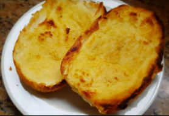

PÃO NA CHAPA
INGREDIENTES
- 1 pão francês (pão de sal)
- 1 a 2 colheres de sopa de manteiga (com ou sem sal, a gosto)
Utensílios
- Faca
- espátula
- Frigideira ou chapa (antiaderente, de preferência)
MODO DE PREPARO
- Corte o pão ao meio no sentido do comprimento, separando as duas metades.
- Passe manteiga generosamente na parte interna de cada metade do pão. A camada não precisa ser exagerada, mas tem que cobrir bem a superfície.
- Aqueça uma frigideira antiaderente (ou chapa de ferro, se tiver) em fogo médio. Não é necessário colocar óleo nem manteiga extra.
- Coloque o pão com o lado da manteiga virado para baixo, diretamente na frigideira quente.
- Pressione um pouco o pão contra a chapa com uma espátula, para dourar por igual.
- Deixe tostar por cerca de 1 a 2 minutos, até a manteiga derreter completamente e formar uma crosta dourada e crocante.
- Sirva quente! Pode comer puro, ou com uma fatia de queijo, geleia ou requeijão.

..clique na imagem..